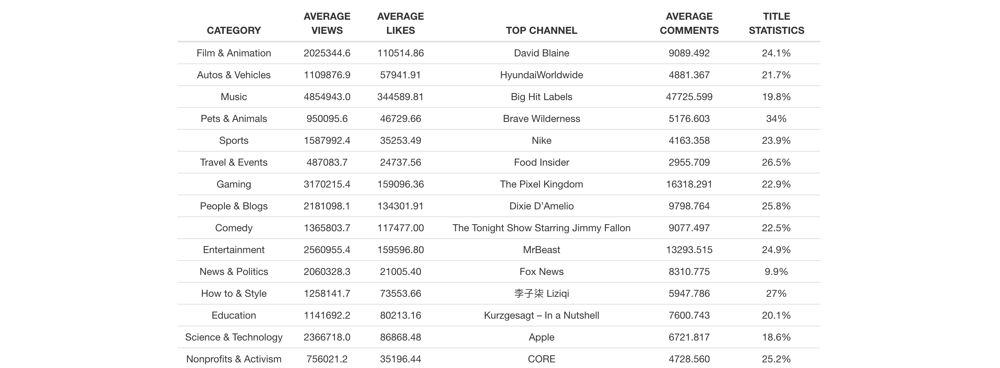
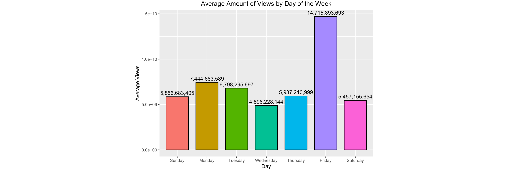

For the table, we grouped by and sorted by categoryId from the dataset to see which category trends the most, and other details that might come with it. We found out that Music came out as the most trending category with the highest average views, and most comments, while the category with the most likes is Film & Animation. As for the title stat, we added that to see if having a video title in all caps can influence the ability to trends as shown on the table.
This graph shows the variation of the time it takes a video to reach the trending page after it’s published. The graph provides us with the mean, median, min, and max values of how long it took a video to trend and is grouped by category. Most of the data is concentrated between the 0 to 5 day range, while there are some outliers above 10 days for most categories. Interestingly enough, the data also included values with negative values. This is because the published date includes the full date and time, whereas the trending date only includes the month and day. For videos to have a negative value of days it took to reach the trending page, it means that the video was wildly popular enough to be trending on the same date it was uploaded. When plotting the graph, we decided that it was best to replace the negative time values with a 0 in order to keep consistency because negative time values are not technically correct.

This pie chart displays the distribution of each video category found
within the trending section as a percentage. Each section of the pie-
chart represents a proportion to the total number of videos within the
trending section during the 3 month period we pulled our data from.
When hovering over a specific section of the graph users are provided
with the category name, the number of videos that fall under that
specific category from our data, and the percentage of the whole are
rounded to two decimal places that represents how frequent a particular
category makes it into the trending section. We created this chart to
get an idea of what videos make it onto YouTube’s trending section more
frequently than others.

This plot displays the average amount of views trending videos recieved on a given day (Sunday to Saturday). We created this chart to see if there is a relationship between average viewership and the day of the week. 